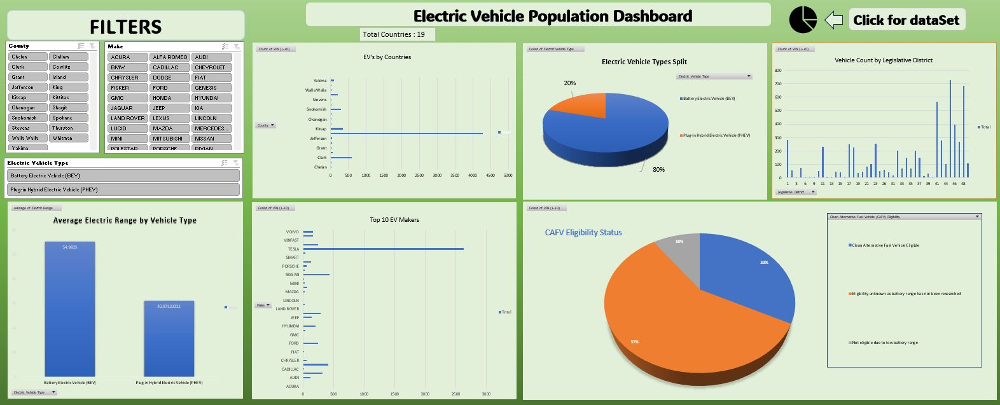
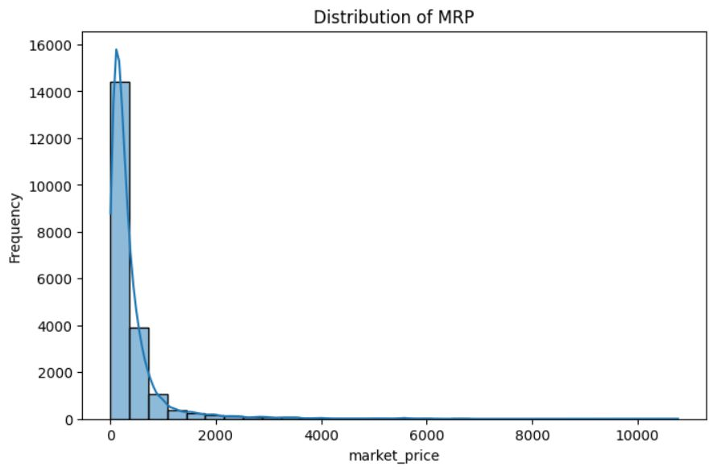
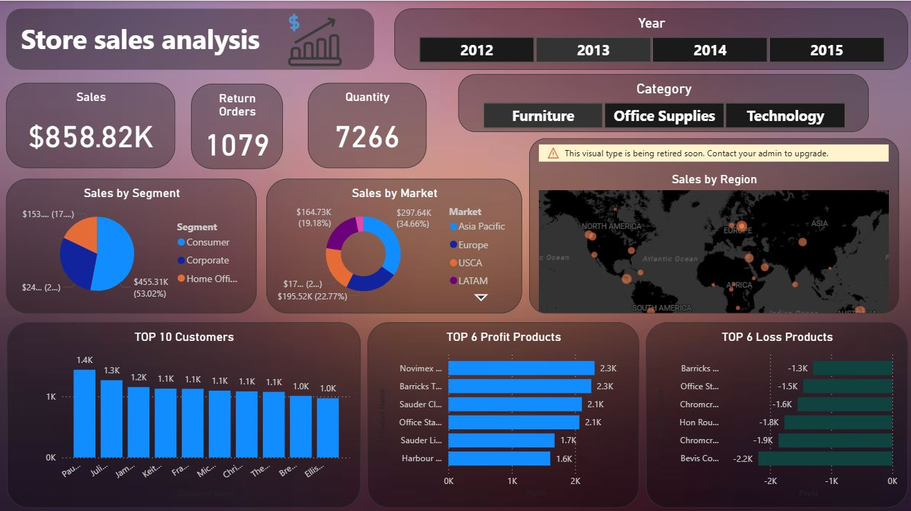
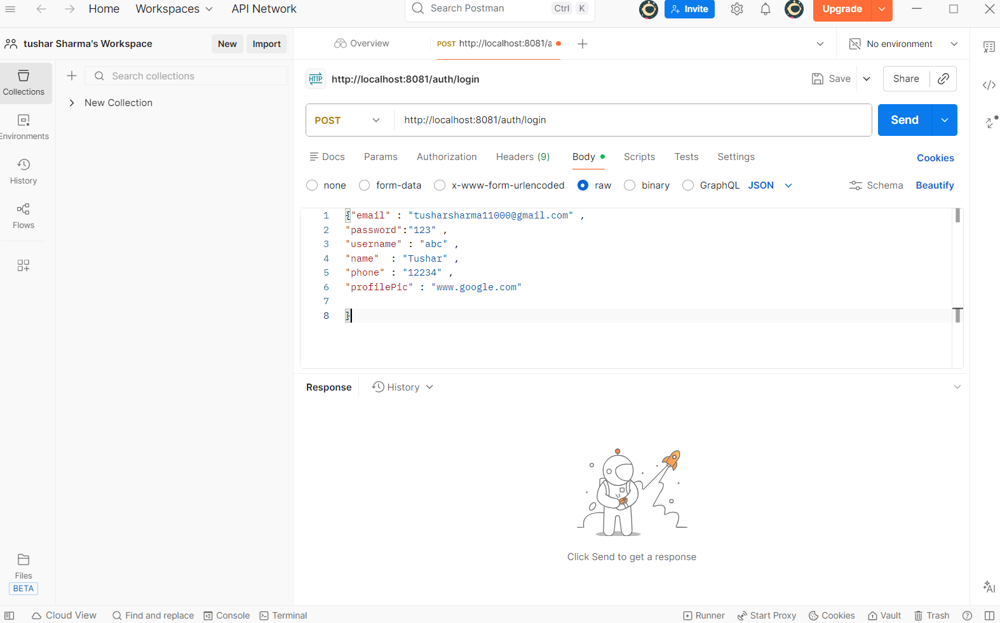

A showcase of my development work and programming projects.

An interactive Excel-based dashboard analyzing EV adoption using pivot tables, slicers, and charts to visualize trends and insights.

Python-based analysis of 28,000+ products using Pandas, NumPy, and visualization tools to uncover pricing and category trends.

Power BI dashboard analyzing sales performance, KPIs, and customer insights using DAX and interactive visuals.

Built a lightweight in-memory database system to efficiently store and manage data, enabling fast and reliable data handling.